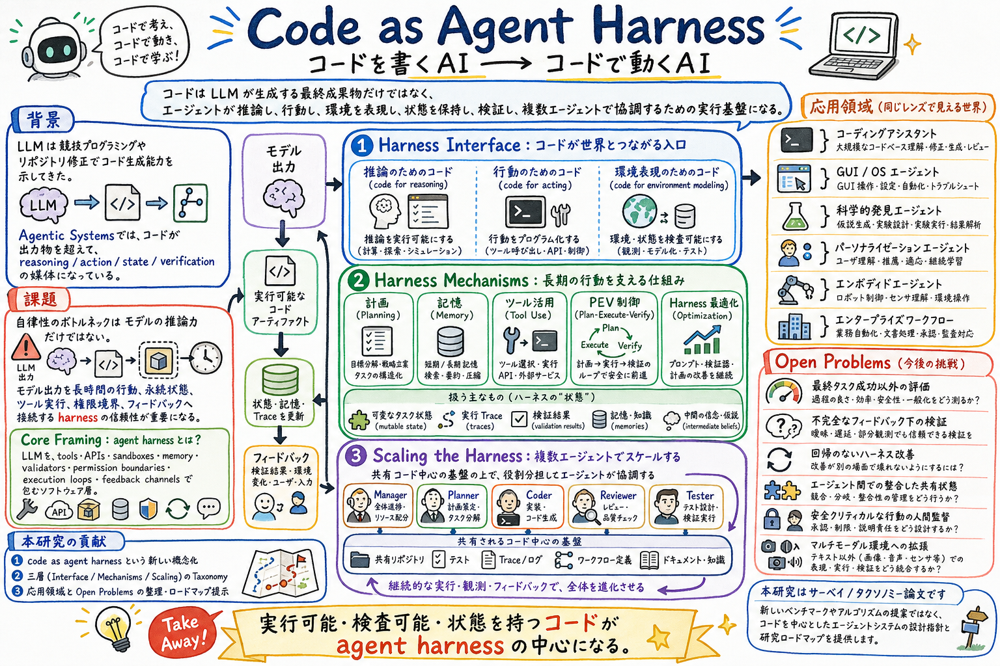

第一の貢献は、code as agent harness という概念フレームを提示し、コードを executable、inspectable、stateful な agent infrastructure として位置づけたこと。

どんな論文か
この論文の出発点は、LLM とコードの関係が変わったことにある。以前の中心は、自然言語から正しいプログラムを生成できるかだった。だが agentic systems では、コードは出力される成果物であるだけでなく、エージェントが推論し、行動し、環境を表現し、実行結果から自己修正するための媒体になっている。
著者らはこの変化を code as agent harness と呼ぶ。ここでいう harness は、LLM の外側にあるツール、API、sandbox、memory、validator、permission boundary、execution loop、feedback channel を含む実行基盤である。重要なのは、コードがその harness の中で、実行可能で、検査可能で、状態を持てるオブジェクトとして働く点にある。
論文は、コード中心の agent system を三層で整理する。第一に harness interface、つまりコードが reasoning、acting、environment modeling の入口になる層。第二に harness mechanisms、つまり planning、memory、tool use、control、optimization を支える層。第三に scaling the harness、つまり shared repository、tests、traces、workflow などを使って複数エージェントが協調する層である。
このサーベイの読みどころは、コード生成の論文リストではなく、コードが agent の外部化された認知・実行・検証インフラになっているという視点だ。Codex、Claude Code、OpenHands、SWE-agent、GUI/OS agents、scientific discovery agents などを、単なる応用例ではなく、同じ code-centric harness の変種として読める。
最後に、著者らは open challenges として、最終成功率を超える評価、不完全な feedback のもとでの検証、regression-free な harness 改善、複数エージェント間の共有状態、人間の oversight、multimodal environment への拡張を挙げる。これはそのまま、実務の agent harness 設計で詰まりやすい場所でもある。
Code as Agent Harness は、コードを LLM の生成対象ではなく、エージェントの operational substrate として整理するサーベイである。
コードは、プログラム補助推論、ロボットや GUI の行動、リポジトリ編集、テスト、実行 trace、sandbox、workflow などを通じて、agent の reasoning、action、state、feedback、verification を支える。
論文の中心主張は、agent autonomy のボトルネックは base model の推論力だけではなく、model output を long-horizon action と persistent state へ接続する harness の信頼性にもある、ということ。
課題と貢献
第二の貢献は、関連研究を harness interface、harness mechanisms、scaling the harness の三層に整理したこと。これは、コード生成、tool use、memory、planning、multi-agent system をばらばらに読まず、一つの実行基盤として読むための地図になる。
第三の貢献は、coding assistants、GUI/OS automation、scientific discovery、personalization、embodied agents などの応用領域を、同じ code-centric harness の表れとして接続したこと。
第四の貢献は、評価、検証、安全性、coordination、multimodal grounding、harness evolution という未解決課題を、モデル性能ではなく harness engineering の問題として明示したこと。
手法のしくみ
1
Harness Interface の層では、コードが三つの入口になる。code for reasoning は中間計算や symbolic solver、execution trace を通じて推論を外部化する。code for acting は tool calls、behavior trees、reusable skills として環境への行動を表す。code for environment modeling は repository、program state、simulator、test、trace を環境状態の表現として使う。
2
Harness Mechanisms の層では、コードが長時間実行の制御面になる。planning は goal を分解し、構造や探索を使って次の行動を決める。memory は repository evidence、working context、execution trace、reusable experience を管理する。tool use は API、terminal、sandbox、verification tool を governed interface として接続する。
3
同じ層で重要なのが Plan-Execute-Verify loop である。plan は意図した変更の契約、execute は sandboxed / permissioned な環境内の状態遷移、verify は tests、static analysis、runtime error、人間レビューなどを通じて accept、revise、escalate、rollback を決める。
4
Scaling the Harness の層では、manager、planner、coder、reviewer、tester などの role-specialized agents が、shared code artifacts、repositories、tests、traces、structured workflows を通じて協調する。コードは単なる成果物ではなく、複数 agent が互いの作業を inspect し、verify し、修正する共通 substrate になる。
検証結果
この論文は新しい benchmark 結果を出す実験論文ではなく、2026 年時点の code-centric agent systems を整理する survey である。したがって見るべき結果は、数値より taxonomy と open problem の切り方にある。
特に重要なのは、コードの役割を generated artifact から agent-initiated code artifact へ広げている点である。regression tests、temporary tools、DSL programs、executable workflows、reusable skills、intermediate program states などが、agent loop の中で生成・実行・観測・修正・保存・共有される対象として扱われる。
応用領域の整理では、code assistants が最も明確な production instantiation として扱われる。repository state、tests、build scripts、issue、branches、pull requests、CI feedback が agent の operational context になり、harness が sandbox、permissions、context plumbing、telemetry、verification hooks を制御する。
GUI/OS agents、scientific discovery、embodied agents でも同じ構造が見える。GUI は DOM、accessibility tree、screenshots、actions、evaluation scripts が code-defined world になる。科学研究では hypothesis、protocol、analysis、LaTeX manuscript が executable pipeline になる。embodied agents では code-based skills が action boundary と reusable memory になる。
限界と読みどころ
この論文は広い survey なので、個々のシステムの評価条件や実装差分を細かく検証するものではない。各手法の有効性を比較したい場合は、元論文へ戻る必要がある。
Code as harness という見方は強いが、コード中心に寄せすぎると、自然言語の社会的合意、組織内の運用ルール、人間の判断、暗黙の責任境界を過小評価する危険がある。
agent-initiated code artifacts は強力だが、実行権限、sandbox、approval boundary、rollback、audit log が弱いと危険にもなる。論文も、人間の oversight と safety-critical action の扱いを open challenge として残している。
multi-agent orchestration では shared code artifacts が coordination を助ける一方、同時変更、古い state、他 agent の前提破壊、検証責任の分散が新しい失敗モードになる。
読みながら見る図表や節
- Figure 1 は taxonomy の全体像を見るための図。論文の主構造である harness interface、harness mechanisms、scaling the harness を確認する場所。
- Section 2 の roadmap は、code for reasoning、code for acting、code for environment modeling を分けて見るために使う。コードが思考、行動、環境表現のどこで使われるかを追うと読みやすい。
- Section 3 の roadmap は、planning、memory、tool use、control、optimization の関係を見る図。個別モジュールではなく、long-horizon execution を制御する表面として読むのがよい。
- Section 4 の multi-agent 図は、role-specialized agents と shared code-centric substrate の関係を見る図。複数 agent がコード、テスト、trace、workflow を通じて協調するという主張の中心になっている。
- Applications の図は、coding assistants、GUI/OS agents、scientific discovery、personalization、embodied agents を同じ code-as-harness lens で並べるための見取り図。
次に読むなら
- Is Grep All You Need? と並べると、agentic search の性能が retriever 単体ではなく、grep / file read / shell / result passing を含む harness に依存する理由が見える。
- Agentic Harness Engineering と並べると、harness をただ設計するだけでなく、観測ログと検証可能な edit manifest で改善する方向へつながる。
- A Methodology for Selecting and Composing Runtime Architecture Patterns for Production LLM Agents と並べると、code-as-harness の概念を production runtime pattern と stochastic-deterministic boundary に落とせる。
- Skill 系の論文と並べると、reusable skills を自然言語手順だけでなく、実行可能な code artifact、検証、状態、権限を含む harness unit として見直せる。
読後Q&A
この論文の中心問いは？
コードを LLM が生成する最終成果物としてだけでなく、agent が推論し、行動し、状態を保持し、検証し、協調するための harness として見られるか、という問い。
agent harness とは何？
LLM を tools、APIs、sandboxes、memory、validators、permission boundaries、execution loops、feedback channels で包み、長時間タスクを実行できる agent にするソフトウェア層。
Code as Agent Harness は普通のコード生成と何が違う？
普通のコード生成は、正しいプログラムを出すことが目的になりやすい。Code as Agent Harness では、コードは agent loop の中で実行され、観測され、修正され、保存され、他 agent と共有される operational substrate になる。
三層の taxonomy は？
Harness Interface、Harness Mechanisms、Scaling the Harness の三層。最初はコードが推論・行動・環境表現の入口になる層、次が計画・記憶・ツール・制御を支える層、最後が複数エージェントの共有 substrate になる層。
agent-initiated code artifact とは？
agent がタスク中に作り、実行し、観測し、修正し、保存し、共有するコードオブジェクト。例として regression tests、temporary tools、DSL programs、executable workflows、reusable skills、intermediate program states がある。
なぜ memory も code harness の一部になる？
repository evidence、working context、execution traces、validation results、reusable experience などは、次の action を決めるための mutable state だから。単なる会話履歴ではなく、実行環境と結びつく state-management layer として扱われる。
Plan-Execute-Verify loop の意味は？
plan が変更意図の契約になり、execute が sandbox や permission の中で状態遷移を起こし、verify が tests、static analysis、runtime feedback、人間レビューで accept / revise / rollback を決めるという制御ループ。
multi-agent では何が変わる？
manager、planner、coder、reviewer、tester などの役割が shared repository、tests、traces、workflow を通じて協調する。コードは成果物であると同時に、agent 間の共通作業場と検証対象になる。
実務で一番使える見方は？
agent の性能を model だけで見ないこと。sandbox、権限、ファイルシステム、テスト、ログ、memory、approval、rollback まで含めて harness として設計・評価する。
一番注意すべき限界は？
コードが実行可能であるほど、権限と安全性が重要になること。agent-authored code を何でも実行・保存・再利用できるようにすると、失敗や危険な変更も harness に取り込まれてしまう。
この論文を一言でいうと？
コードを書く AI から、コードで動く AI へ視点を切り替えるためのサーベイ。